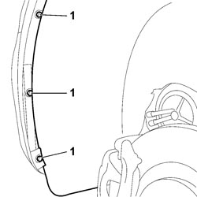
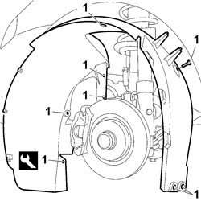
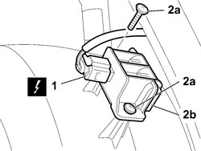

7055B90 LEFT FRONT WHEEL ARCH LINER - R.R.
- Path
- Procedures > 70 FITTINGS > 7055 MOULDINGS AND PROTECTION > 7055B EXTERIOR PROTECTIONS > 7055B90 LEFT FRONT WHEEL ARCH LINER - R.R.
- Kind
- repair procedure (removal / refitting; the operation number is the code)
- Applies to
- all engines; all production periods
- Interactive page
- https://sloeber94.github.io/elrnDB-fCrm/en/#/194001182
Applies to: all engines; all production periods
 Removing
Removing
 Refitting
RefittingPosition the vehicle on the lift and raise it.
Op. 4450B02 LEFT FRONT WHEEL - R.R
1. Unscrew the three supplementary wheel arch bolts at the end of the wing.

Applies to: all engines; all production periods
1. Use an appropriate tool to prise open the eight studs retaining the supplementary wheel arch to the body.
Tool | Description | Function | Validity |
|---|---|---|---|
1878077000 | Knife | Retainer removal |
Remove the supplementary wheel arch from the vehicle.

Applies to: all engines; all production periods
For versions where fitted:
Description | Connector | |
|---|---|---|
1 | TYRE PRESSURE CHECK CONTROL UNIT AERIAL. |
2. Unscrew bolts (2a) and remove the tyre pressure check control unit aerial (2b) from the supplementary wheel arch.

Applies to: all engines; all production periods
Refitting
Removing- Check that the wheel arch liner is not damaged.
For versions where fitted:
Check the tyre pressure check control unit aerial is not damaged.
- Position the tyre pressure check control unit aerial, tighten the bolts and connect the electrical connection.
Description | Connector | |
|---|---|---|
TYRE PRESSURE CHECK CONTROL UNIT AERIAL. |
- Position the supplementary wheel arch.
- Do up the eight studs retaining the supplementary wheel arch to the body.
- Tighten the three supplementary wheel arch bolts at the end of the wing.
Topics linked from this page (2)
Topics that link to this page (35)
- 0010T71 POWER STEERING FLUID CHECK LEVEL AND TOP UP IF NECESSARY
- 1004B10 POWER UNIT WITH MANUAL GEARBOX - R.R
- 1004B14 POWER UNIT WITH AUTOMATIC TRANSMISSION R + R
- 1020A20 CRANKCASE OIL SUMP - R.R CLEAN SURFACES FOR SEALANT APPLICATION
- 1020D26 FLYWHEEL SIDE OIL SEAL COVER - R.R AND REPLACE GASKETS
- 1020D38 FLYWHEEL SIDE OIL SEAL - REPLACE
- 1024B10 ENGINE FLYWHEEL - R + R FOR VERSIONS WITH MANUAL GEARBOX
- 1084A40 ENGINE OIL LEVEL SENSOR - R + R
- 1084B26 ENGINE OIL INTAKE DUCT - R.R
- 1084C34 ENGINE OIL COOLING RADIATOR - R + R
- 1084C36 ENGINE OIL COOLING RADIATOR SUPPORT BRACKET - R + R
- 1084C40 AIR DUCT FOR ENGINE OIL COOLING RADIATOR - R.R.
- 1088B20 ENGINE COOLING RADIATOR - R + R
- 1088B26 AIR DUCT ON RADIANT MASS - R.R.
- 1088E11 FANS WITH SINGLE ENGINE DUCT - R+R
- 1810A20 CLUTCH - R + R
- 1820B30 CLUTCH HYDRAULIC ACTUATOR - R.R.
- 2110A10 MANUAL GEARBOX AND DIFFERENTIAL - R + R
- 3310A30 FRONT BRAKE CALIPER (ONE) - R.R
- 3340B10 HOSE TO L/H OR R/H FRONT BRAKES (ONE) - R+R
- 3340B55 RIGID PIPE FROM HYDRAULIC CONTROL UNIT TO LEFT FRONT BRAKE - R.R.
- 4410A12 FRONT SUSPENSION DAMPER (ONE), LH OR RH - FOR MCPHERSON STRUT SYSTEM - INCLUDES DISMANTLING/REASSEMBLY OF ASSEMBLY AT BENCH - R.R
- 4410D10 FRONT SUSPENSION FRAME - R+R
- 4450B92 FRONT TYRES PRESSURE TRANSMITTER, (ONE) LH OR RH - R R
- 5050A10 WINDSCREEN WASHER FLUID RESERVOIR (IN ENGINE COMPARTMENT) - R+R
- 5050B22 FRONT AND REAR SCREEN WASHER PUMP - R+R
- 5050D08 HEADLAMP WASHER JET/S - R R
- 5050D13 HEADLAMP WASHER SYSTEM TYPES AND FITTINGS - R R
- 5050D20 HEADLAMP WASHER PUMP - R+R
- 5505C26 BONNET WIRING - R.R.
- 5540B42 CONTROL UNIT OF ONE GAS DISCHARGE LIGHT CLUSTER R R
- 5540B70 LEFT FRONT LIGHT CLUSTER WITH DIRECTION INDICATOR - R.R.
- 5540B71 RIGHT FRONT LIGHT CLUSTER WITH DIRECTION INDICATOR - R.R.
- 7205E10 STRIPPING FRONT BUMPER
- 7210E10 R.R. FRONT BUMPER